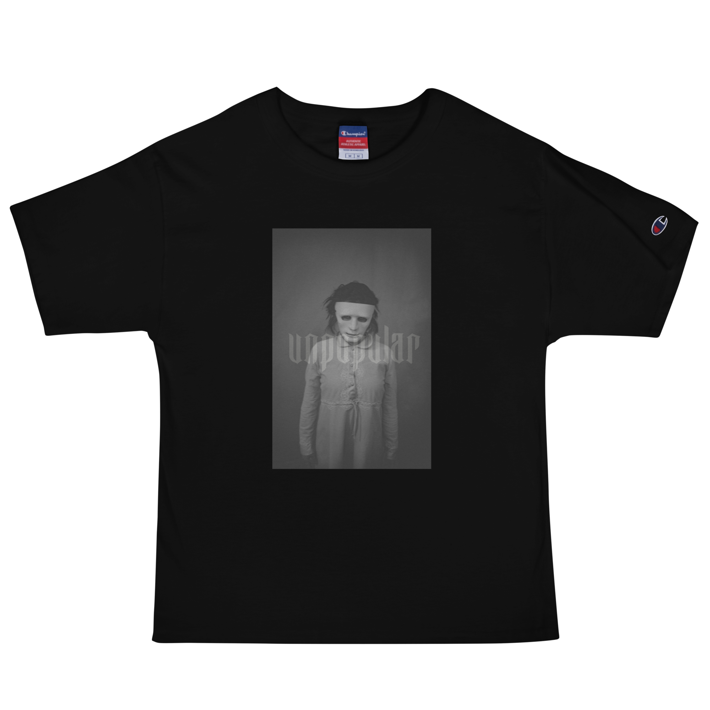
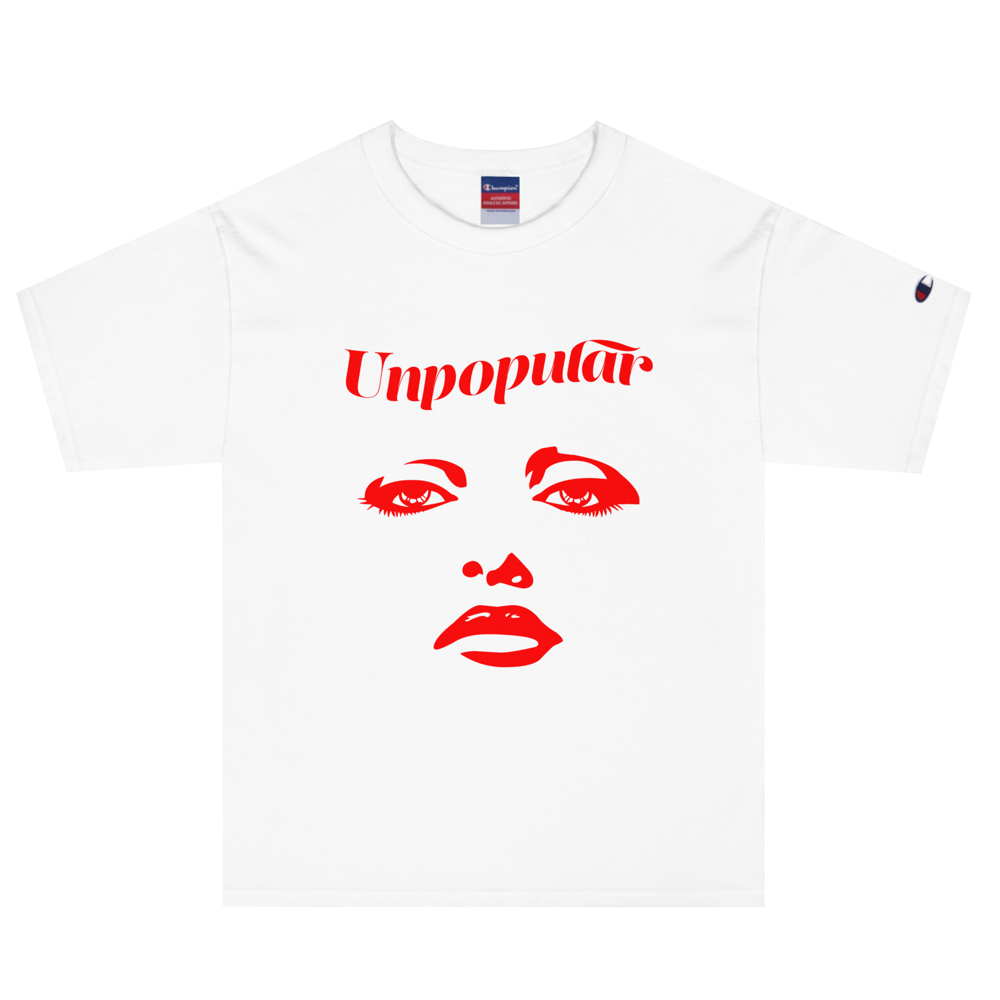
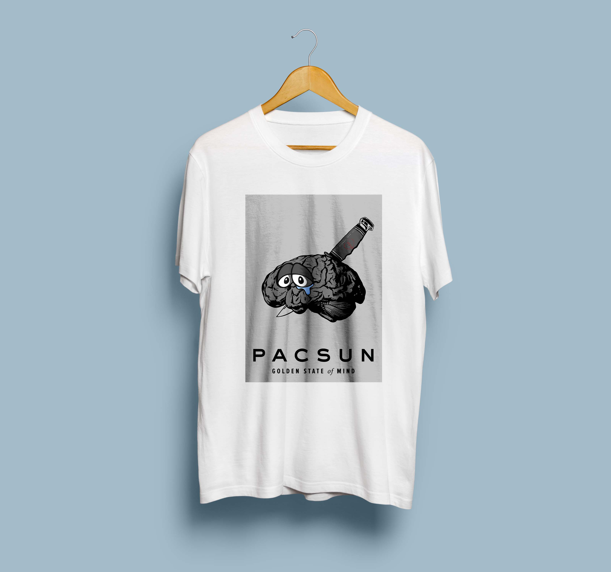
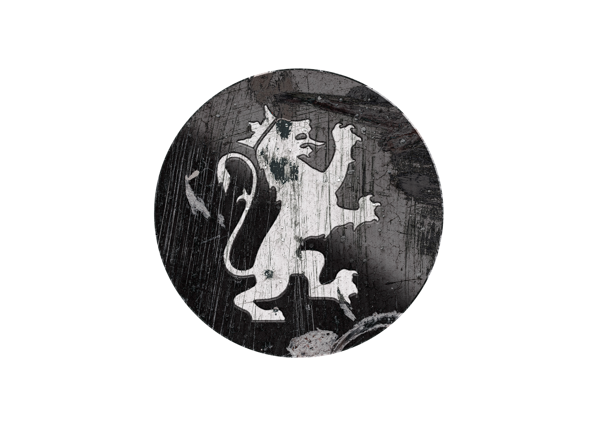
 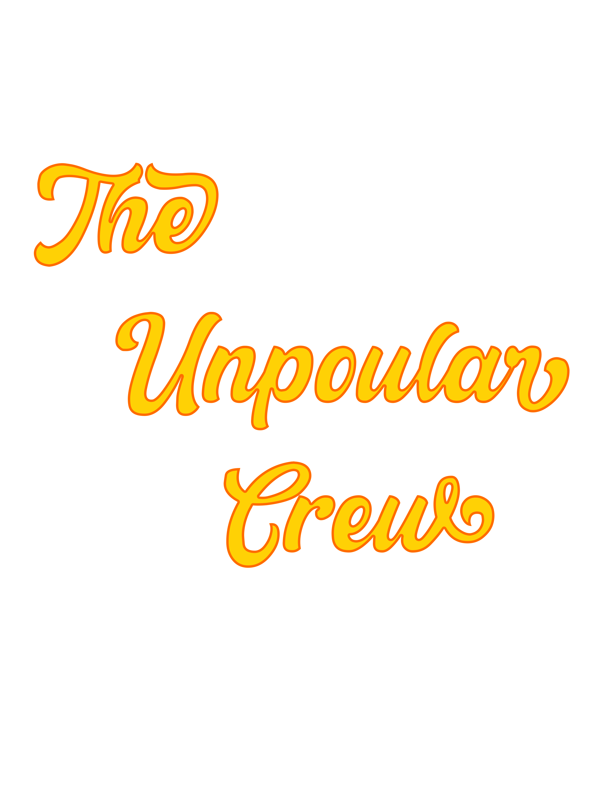
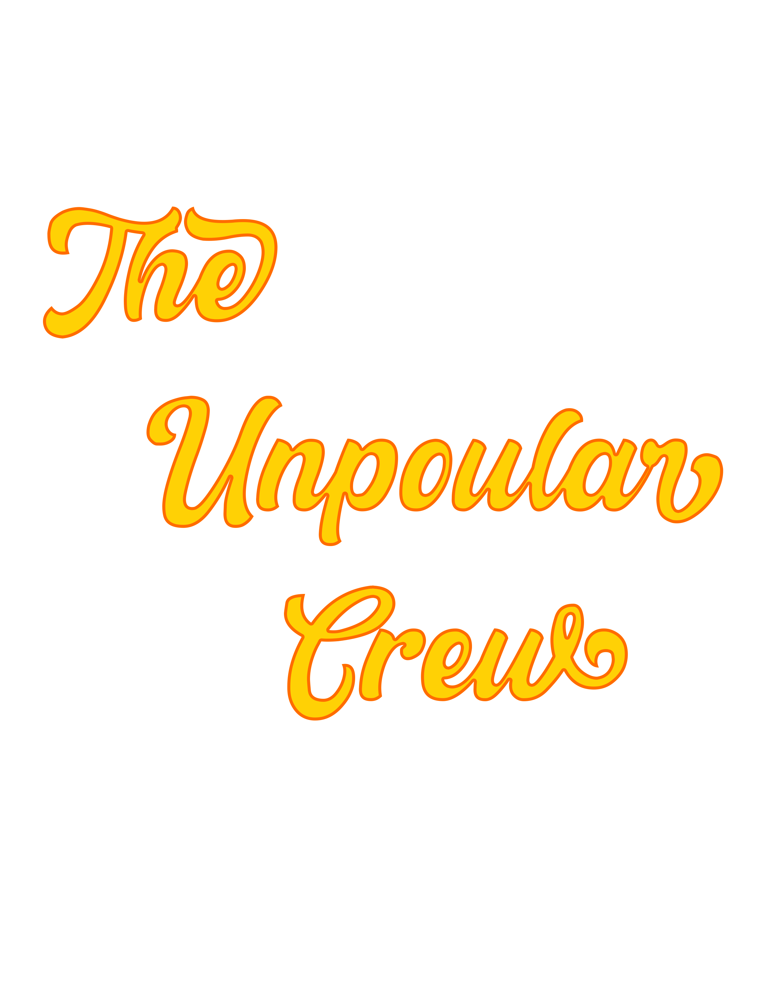

 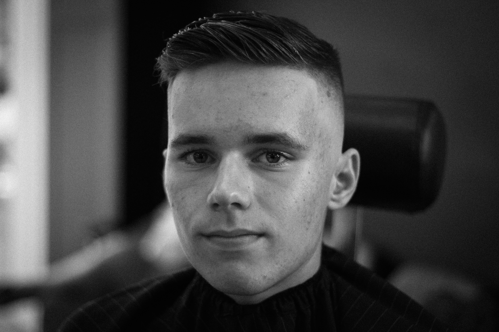
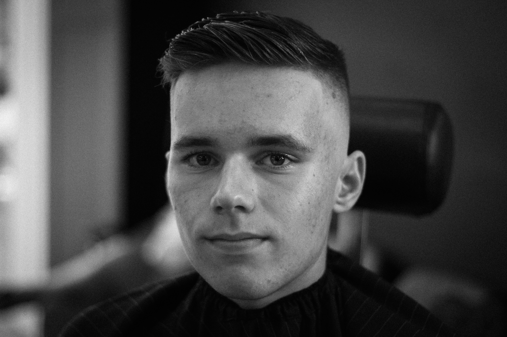
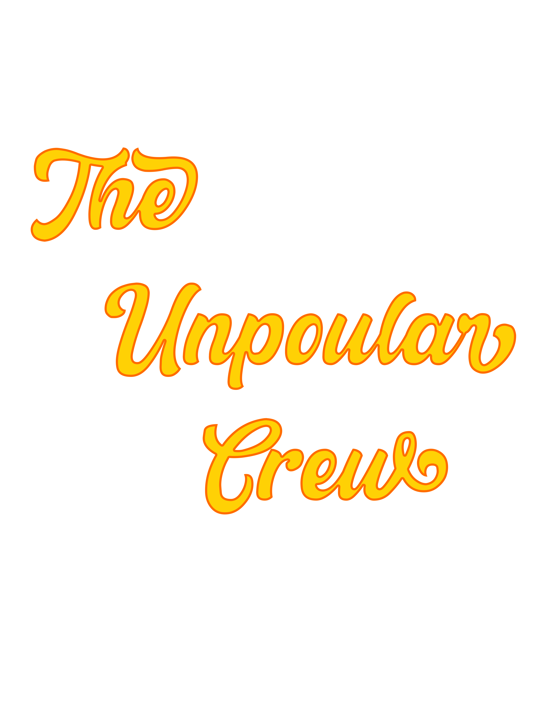
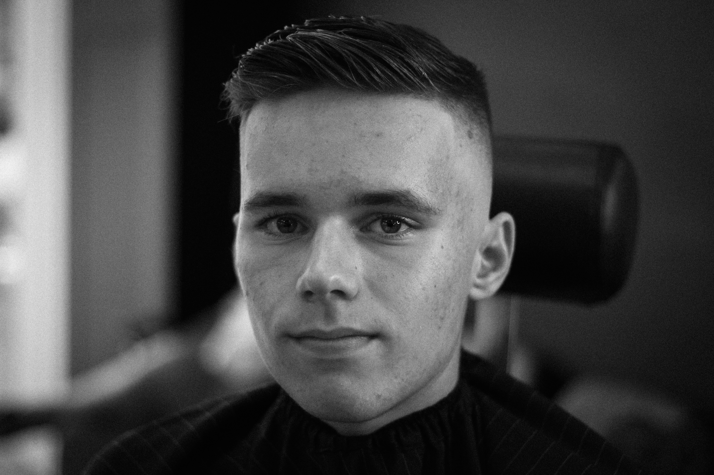
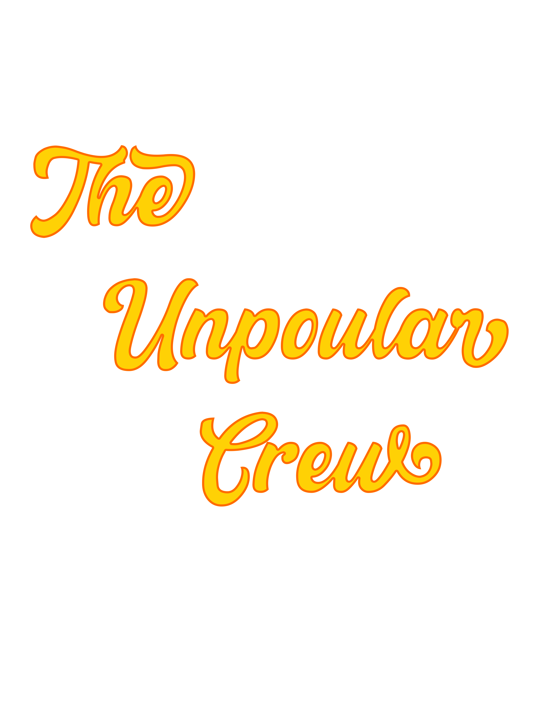
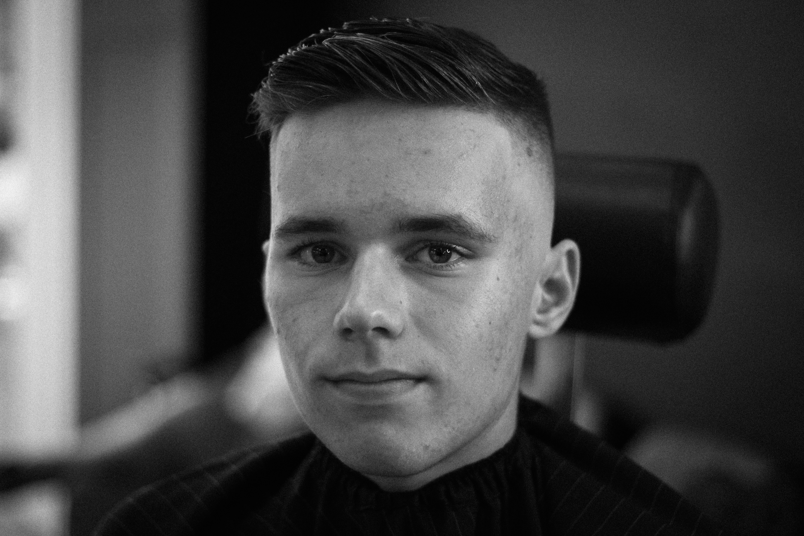
About
Javien Robinson or "Unpopular Jay" is a clothing brand owner, graphic designer and creative from Orlando,Florida. Most of his inspiration comes from everyday, realistic matters that we all face each day, the highs and lows. Through his work, you will understand how he feels unpopular to the world.
A free society is a society where it is safe to be unpopular
Adlai Stevenson II